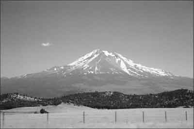
The main volcanic feature in the photograph is a
A. fissure.
B. caldera.
C. shield cone.
D. composite cone.
Features associated with intrusive volcanism are
A. dikes and levees.
B. batholiths and sills.
C. cones and moraines.
D. lava plateaus and synclines.
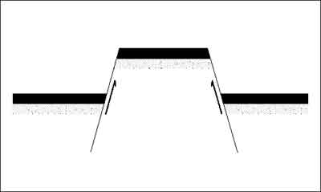
The diagram above illustrates a
A. horst.
B. graben.
C. volcanic plug.
D. fold mountain.
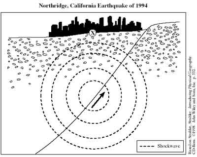
Location X shown above is a(n)
A. fault.
B. focus.
C. geyser.
D. epicentre.
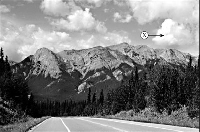
In this photograph of the Canadian Rockies, the mountains were mainly formed by
A. tension.
B. glaciation.
C. volcanism.
D. compression.
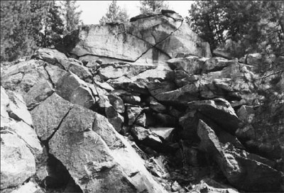
The break up and fragmentation of the rock in the photograph is primarily the result of
A. oxidation and hydrolysis.
B. plant and animal activity.
C. frost-shattering and gravity.
D. volcanism and crystal growth.
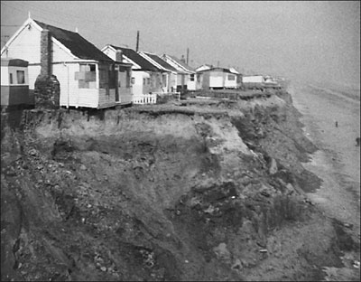
The erosional processes that threaten the homes in the photograph are
A. attrition and deflation.
B. corrosion and traction.
C. corrasion and saltation.
D. abrasion and hydraulic action.
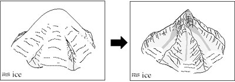
The diagrams above illustrate the formation of a
A. crag and tail.
B. truncated spur.
C. pyramidal peak.
D. roche moutonnee.
Which processes are responsible for the formation of the main features in the diagrams?
A. plucking and abrasion
B. hydration and oxidation
C. corrosion and hydraulic action
D. thermal expansion and contraction
Which of the following depositional features are the result of continental glaciation?
A. eskers, fiords and horns
B. aretes, drumlins and tarns
C. erratics, moraines and outwash plains
D. cirques, kettle lakes and truncated spurs
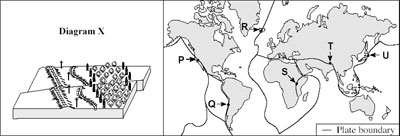
The process illustrated by diagram X is found at which location on the map?
A. P
B. S
C. T
D. U
Which location on the map is associated with steep-sloped volcanic cones consisting of multiple layers of ash and thick, andesitic lava?
A. Q
B. R
C. S
D. T
The islands at location U on the map are the result of
A. diverging oceanic plates.
B. a subducting oceanic plate.
C. colliding continental plates.
D. diverging continental plates.
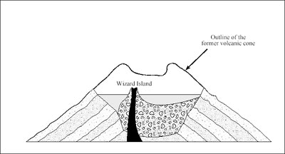
The diagram above illustrates the formation of a(n)
A. tarn.
B. atoll.
C. caldera.
D. batholith.
When a block of the earth's crust slips between two normal fault lines, the resulting landform is a
A. rift valley.
B. thrust fault.
C. reverse fault.
D. fold mountain.
Which processes are responsible for the formation of a levee?
A. plucking and abrasion
B. flooding and deposition
C. isostatic uplift and rejuvenation
D. thermal expansion and exfoliation
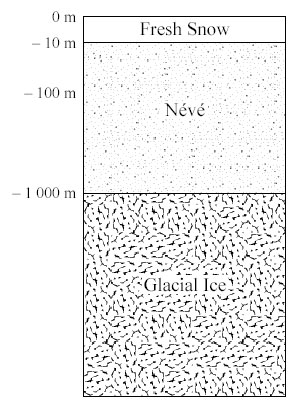
The formation of the glacial ice illustrated above is a result of
A. fluctuations in the earth's orbit.
B. pressure and snowfall exceeding melting.
C. excessive precipitation, and glacial retreat.
D. compression and ablation exceeding snowfall.
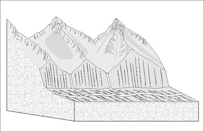
Which pair of erosional features is associated with the landscape in the diagram above?
A. horns and sills
B. levees and cirques
C. hanging valleys and spits
D. truncated spurs and aretes
Large boulders transported and deposited by glaciers are called
A. kettles.
B. erratics.
C. drumlins.
D. striations.
Undercutting at the base of a coastal cliff is a result of
A. gravity and saltation.
B. traction and solution.
C. exfoliation and corrosion.
D. abrasion and hydraulic action.
Stalactites and stalagmites are the result of an interaction between the
A. biosphere, atmosphere and hydrosphere.
B. atmosphere, hydrosphere and biosphere.
C. lithosphere, atmosphere and hydrosphere.
D. biosphere, asthenosphere and lithosphere.
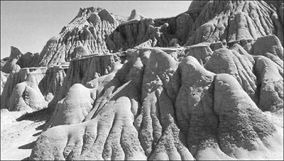
The features in the photograph above have been shaped mainly by
A. ice.
B. wind.
C. water.
D. waves.
Seismologists are associated with the study of
A. severe storms.
B. ocean currents.
C. plate movement.
D. rainforest destruction.
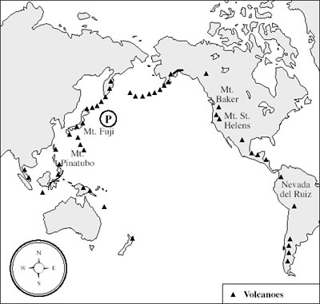
Most of the volcanoes shown on the map are
A. shield.
B. cinder.
C. fissure.
D. composite.
A common geographic theme represented on the map is
A. region.
B. movement.
C. absolute location.
D. human interaction.
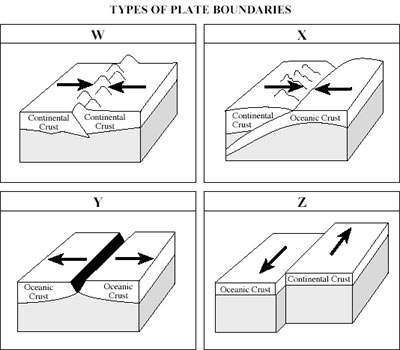
Which of the diagrams best represents the type of plate boundary found at location P on the map?
A. W
B. X
C. Y
D. Z
Which plate boundary diagram illustrates the process of rifting?
A. W
B. X
C. Y
D. Z
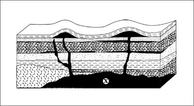
Feature X in the diagram above is a
A. dike.
B. batholith.
C. lava plateau.
D. sedimentary strata.
Which of the following processes created feature X?
A. compression
B. isostatic uplift
C. intrusion of magma
D. explosive volcanic activity
A scree slope consists of
A. glacial drift and till.
B. a mixture of sand and clay.
C. rounded gravels and alluvium.
D. coarse, angular rock fragments.
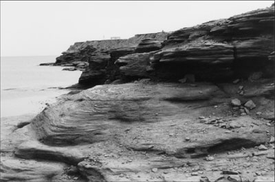
The rock type in the photograph is
A. igneous.
B. sedimentary.
C. metamorphic.
D. hydrothermal.
The erosional processes primarily responsible for shaping the coastal landscape inthe photograph are
A. plucking and deflation.
B. saltation and corrasion.
C. exfoliation and mass wasting.
D. hydraulic action and abrasion.
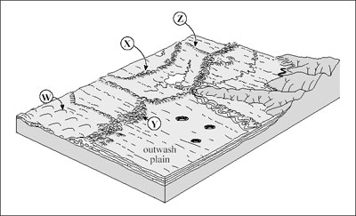
A terminal moraine is located at
A. W.
B. X.
C. Y.
D. Z.
Aretes and cirques are a direct result of the interactions between the
A. lithosphere and biosphere.
B. biosphere and atmosphere.
C. hydrosphere and lithosphere.
D. atmosphere and hydrosphere
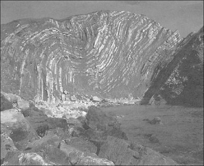
What tectonic force is directly responsible for the formation of the landform in Photograph 2?
A. rifting
B. tearing
C. tension
D. compression
A rock type commonly associated with the landform in the photograph is
A. basalt.
B. granite.
C. obsidian.
D. limestone.
The formation of the rocks in the photograph is the direct result of interactions between the
A. atmosphere and biosphere.
B. atmosphere and lithosphere.
C. hydrosphere and lithosphere.
D. troposphere and hydrosphere.
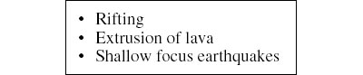
The information above is associated with the
A. divergence of two plates.
B. lateral movement of two plates.
C. convergence of two oceanic plates.
D. subduction of an oceanic plate under a continental plate.
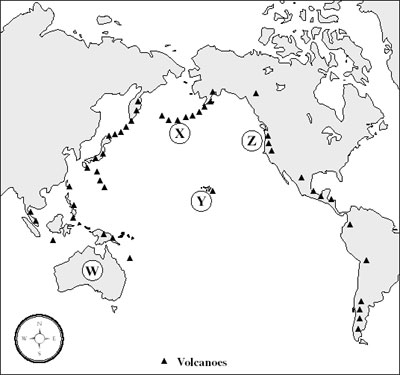
At which location on the map above would both composite volcanoes and island arcs be found?
A. W
B. X
C. Y
D. Z
A tectonic event at Z may result in damage and loss of life at Y due to
A. a tsunami.
B. mud flows.
C. liquefaction.
D. an ash cloud.
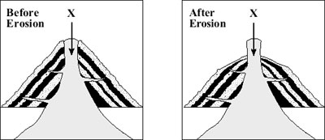
Feature X in the diagrams above is a(n)
A. sill.
B. rock pillar.
C. crag and tail.
D. exposed neck.
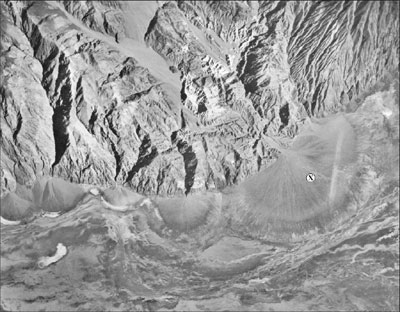
Feature X in the photograph is a(n)
A. alluvial fan.
B. cuspate delta.
C. slip-off slope.
D. terminal moraine.
The formation of feature X is mainly the result of
A. abrasion and plucking.
B. corrosion and deflation.
C. soil creep and slumping.
D. hydraulic action and deposition.
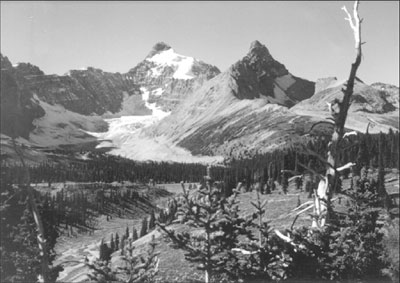
Glacial features visible in the photograph are
A. eskers and stacks.
B. cirques and horns.
C. erratics and grykes.
D. drumlins and levees.
Convection currents responsible for plate movement are found within the
A. crust.
B. inner core.
C. exosphere.
D. asthenosphere.
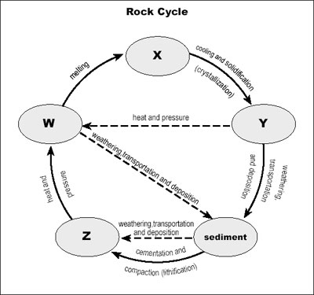
The rock type found at W would be
A. igneous.
B. sedimentary.
C. metamorphic.
D. hydrothermal.
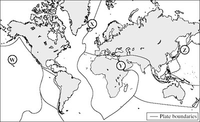
The tectonic process and resulting features associated with location X on the map above are
A. subduction and rift valleys.
B. faulting and fold mountains.
C. divergence and shield volcanoes.
D. convergence and composite cones.
The highest magnitude earthquakes have most frequently occurred at map location
A. W.
B. X.
C. Y.
D. Z.
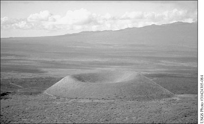
What type of volcano is illustrated in the photograph above?
A. dome
B. shield
C. cinder
D. composite
A solidified intrusion of magma found between layers of strata is called a
A. sill.
B. dike.
C. fissure.
D. batholith.
Anticlines and synclines are the result of
A. rifting.
B. tension.
C. faulting.
D. compression.
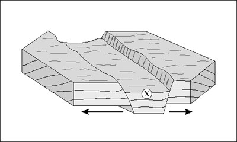
The landform at X in the diagram above is a
A. horst.
B. scarp.
C. graben.
D. geosyncline.
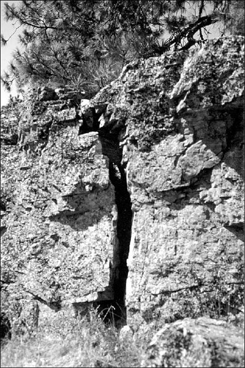
Which mechanical weathering process is illustrated in the diagram above?
A. plucking
B. oxidation
C. hydrolysis
D. frost shattering
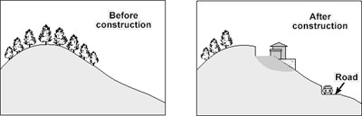
Referring to the diagrams above, human activity has increased the likelihood of what occurrence?
A. earthquakes
B. mass wastage
C. hydraulic action
D. chemical weathering
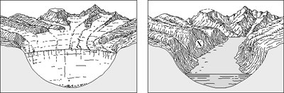
Referring to the diagrams above, what feature will result when the glacial trough in diagram R is occupied by an arm of the sea as in diagram S ?
A. ria
B. fiord
C. lagoon
D. canyon
Feature X in diagram S is a(n)
A. arete.
B. cirque.
C. truncated spur.
D. pyramidal peak.
A transported rock geologically different from the bedrock on which it lies is a(n)
A. butte.
B. stack.
C. erratic.
D. cap rock.
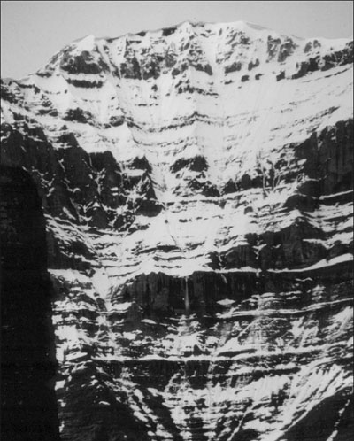
The stratification of rock shown in the photograph is associated with which rock classification?
A. magmaticB. sedimentaryC. metamorphicD. extrusive igneous
The mountain in the hpotograph was formed mainly by
A. tension and isostasy.B. uplift and volcanism.C. weathering and upwelling.D. deposition and compression.
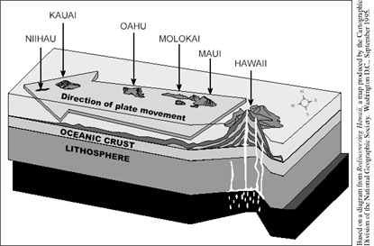
The movement of the Pacific Plate shown in the diagram above is due to the convectional currents within the
A. exosphere.B. hydrosphere.C. thermosphere.D. asthenosphere.
The Hawaiian Islands are the result of
A. subduction.B. hot-spot activity.C. plate divergence.D. plate convergence.
Calderas and fissures are features associated with
A. glaciation.B. lithification.C. coastal erosion.D. volcanic activity.
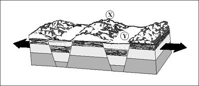
Features X and Y in the diagram above are
A. horsts and grabens.B. sills and batholiths.C. anticlines and synclines.D. block and fold mountains.
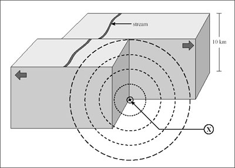
Feature X in the diagram above is a(n)
A. focus.B. aquifer.C. syncline.D. epicentre.
The analysis and interpretation of the process shown in the diagram above would
be conducted by a
A. seismologist.B. cartographer.C. climatologist.D. meteorologist.
Stalactites and stalagmites are formed as a result of
A. ice wedging.B. wave erosion.C. river deposition.D. chemical weathering.
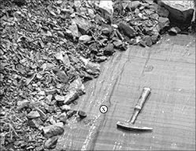
The feature labelled X in the photograph is a
A. fault.B. joint.C. fracture.D. striation.
Which process is primarily responsible for the formation of feature X in the photograph?
A. abrasionB. deflationC. corrosionD. hydraulic action